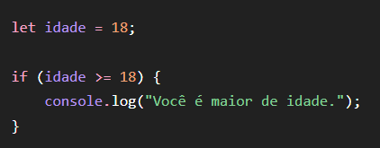
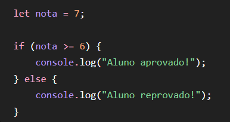
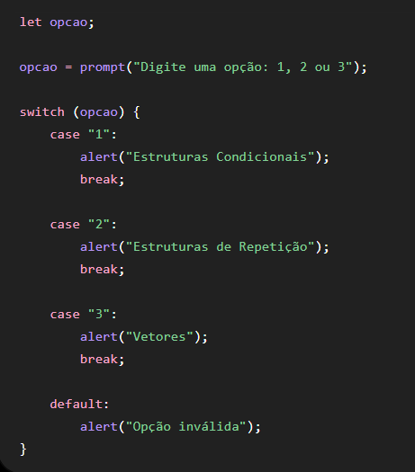

Estrutura Se
Estrutura Condicional Se (if) A estrutura condicional Se, representada em JavaScript pelo comando if, é utilizada quando o programa precisa tomar uma decisão com base em uma condição. O programa verifica se uma determinada expressão é verdadeira ou falsa e, dependendo do resultado, executa uma ação. Por exemplo, podemos verificar se uma pessoa possui 18 anos ou mais. Caso essa condição seja verdadeira, o programa pode informar que a pessoa é maior de idade. Também podemos utilizar o comando else, que significa senão, para definir o que acontecerá caso a condição seja falsa. Outro exemplo seria verificar a nota de um aluno. Se a nota for maior ou igual a 7, o programa pode informar que o aluno está aprovado. Caso contrário, pode informar que ele não atingiu a nota necessária. Dessa forma, a estrutura Se permite que o programa tome decisões diferentes de acordo com as informações recebidas.
Exemplo 01
Estrutura condicional – Maior de idade
Nesse exemplo, utilizamos a estrutura condicional "if/else" para verificar a idade de uma pessoa.
1. Primeiro, o usuário informa sua idade por meio do campo de entrada do HTML.
2. O JavaScript recebe esse valor e verifica a condição.
3. Com o "if", verificamos se a idade é maior ou igual a 18 anos.
4. Se a condição for verdadeira, o programa mostra uma mensagem
informando que a pessoa é maior de idade.
5. Caso a condição seja falsa, o "else" é executado e o programa
informa que a pessoa é menor de idade.
Dessa forma, a estrutura "if/else" permite que o programa tome
uma decisão de acordo com o valor informado pelo usuário.

Exemplo 02
Estrutura condicional – Aprovação ou reprovação
Nesse exemplo, utilizamos a estrutura condicional "if/else" para verificar a nota de um aluno.
1. Primeiro, o aluno informa sua nota no campo de entrada do HTML.
2. O JavaScript recebe a nota informada.
3. O "if" verifica se a nota é maior ou igual a 7.
4. Se a condição for verdadeira, o programa mostra a mensagem “Aprovado”.
5. Se a condição for falsa, o "else" é executado e o programa mostra a mensagem “Reprovado”.
Assim, o programa utiliza uma condição para analisar a nota e determinar automaticamente
o resultado do aluno.

Atividade
Aqui vai a atividade prática da estrutura "se"...
Estrutura Caso
Estrutura Condicional Caso(switch)
A estrutura condicional Caso, representada em JavaScript pelo comando switch,
é utilizada quando precisamos trabalhar com várias opções diferentes.
Ela verifica o valor de uma variável e executa uma ação específica para cada possibilidade encontrada.
Por exemplo, imagine um sistema que possui um menu de opções:
1 — Estruturas Condicionais
2 — Estruturas de Repetição
3 — Vetores
Ao escolher uma das opções, o programa verifica qual número foi informado e executa o conteúdo correspondente. Para cada possibilidade utilizamos o case, que representa cada caso ou opção.
Também podemos utilizar o default, que será executado caso nenhuma das opções informadas seja encontrada.
A estrutura Caso é muito útil para criar menus, sistemas com opções, escolha de dias da semana, meses ou diferentes alternativas. Ela ajuda a organizar o código quando existem várias possibilidades específicas.
Exemplo 01
O que está acontecendo no programa?
Neste programa, a variável dia é criada sem possuir um valor inicial.
Em seguida, o comando prompt() solicita que o usuário digite um número
correspondente a um dia da semana.
Depois que o usuário informa o número, a estrutura switch verifica qual foi a opção
digitada e compara esse valor com os diferentes case disponíveis.
Caso o usuário digite 1, será exibido Domingo;
se digitar 2,
será exibido Segunda-feira;
e se digitar 3, será exibido Terça-feira.
Após encontrar a opção correta, o comando break encerra a execução da estrutura switch,
impedindo que os outros casos sejam executados. Caso o usuário digite um número
diferente das opções disponíveis, o default será executado e mostrará a mensagem "Dia inválido".
Dessa forma, o programa utiliza a estrutura condicional Caso (switch) para tomar
uma decisão de acordo com a opção escolhida pelo usuário.

Exemplo 02
Neste programa, a variável opcao é criada inicialmente sem receber um valor. Em seguida,
o comando prompt() solicita que o usuário digite uma opção entre 1, 2 ou 3.
Depois que o usuário informa sua escolha, a estrutura switch verifica o valor digitado
e compara com cada uma das opções disponíveis.
Se o usuário digitar 1, o programa informa
"Estruturas Condicionais".
Se digitar 2, será exibida a mensagem "Estruturas de Repetição".
Caso digite 3, o programa mostrará "Vetores".
aaaaaaaaaaaaaaaaaaaaaaaaaaaaApós executar a opção correspondente, o comando break encerra aquele caso,
evitando que os próximos casos sejam executados. Caso o usuário digite um valor diferente
de 1, 2 ou 3, o default será executado e mostrará a mensagem "Opção inválida".
Dessa forma, o programa utiliza a estrutura condicional Caso (switch) para identificar
a opção escolhida pelo usuário e executar uma ação diferente para cada escolha.

Atividade
Aqui vai a atividade prática da estrutura "caso"...